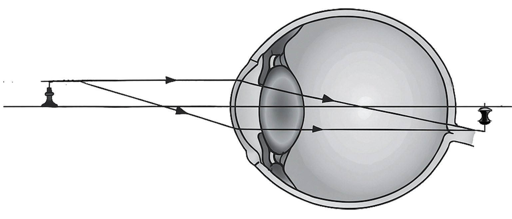
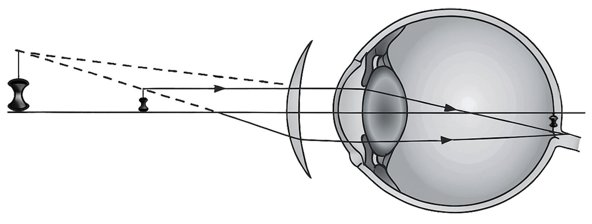
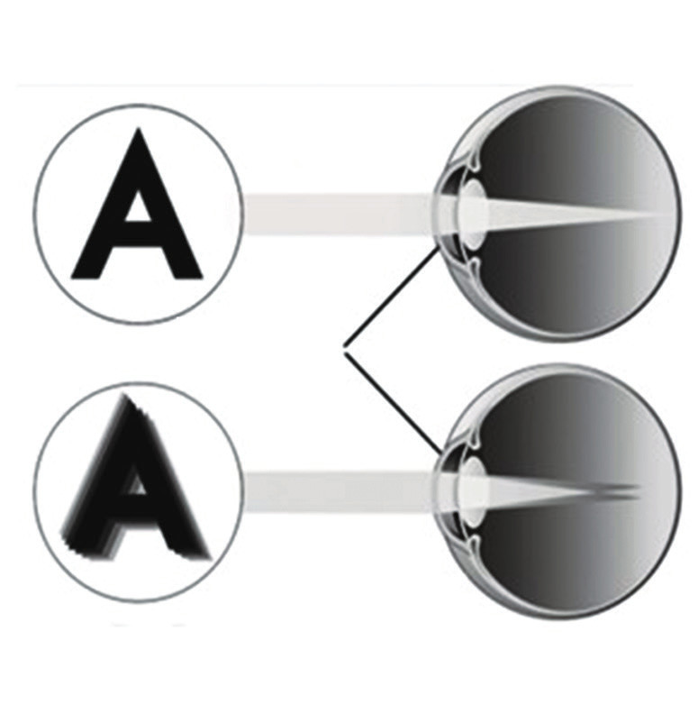

lens is required to form a virtual image at or beyond the near point. The lens converges the rays of light from a near object to form the image at or beyond the near point. The eye lens then focuses the image of the glass lens onto the retina. Figure 6.25 shows the correction of the hyperopic or presbyopic eye.


Astigmatism
Astigmatism is the imperfection in the curvature of the eye that causes the formation of blurred images on the retina. It occurs when either the cornea or the lens has mismatched curves. That is, instead of having a curve like a ground ball, the surface is egg-shaped. This causes the lens to have different focal points when looking at the same object. Consequently, rays of light from the object are focused at different points, leading to image formation at different positions on the retina. The result is blurred vision. Figure 6.26 illustrates astigmatism. Astigmatism is often present at birth and may occur in combination with near-sightedness or far-sightedness.
